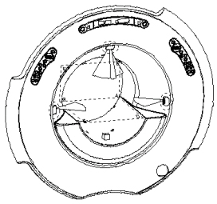
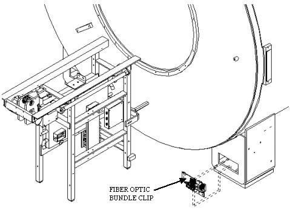
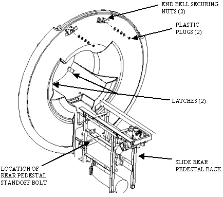

Operating Documentation
Direction 5133315-3, Rev# 14
Signa EXCITE HD 1.5T Service Methods
Module Version 1.0, Version Date 5/3/07
Operating Documentation |
| Required Persons | Preliminary Reqs | Procedure | Finalization |
|---|---|---|---|
| 1 |
Procedures for removing the rear end bell.
Lock out and tag out circuit breaker MR1 A14 CB6 at rear of RF/Pen Cabinet (MR1) on magnet enclosure power supply (MEPS) module.
For RF/Pen II and RF/PDU Cabinet: Lock out and tag out circuit breaker MR1 A20 CB4 at rear of RF/Pen II and RF/PDU Cabinet on System Support Module (SSM).
(Refer to LOCKOUT TAGOUT Procedure and Checklist.)
Verify that voltage between MR1 A14 TP4 (+) and TP13 (–) is 0 Vdc.
For RF/Pen II and RF/PDU Cabinet, verify that voltage between MR1 A20 TP4 (+) (SRI+24V) and TP13 (–) (SRI RTN) is 0 Vdc.
Remove bridge. See Bridge Removal.
Remove rear enclosure panels. See Illustration 1.
Remove rear pedestal covers by lifting off. See Illustration 1.
Disconnect speaker and microphone cables from intercom board located on rear pedestal. See Illustration 1.
Illustration 1: REAR COVERS

Unclip fiber optic bundle from light source located in rear right magnet foot. See Illustration 2.
Un-route the fiber optic bundle that runs from the light source through the patient comfort module in the rear end bell. The fiber optic bundle will remain connected to the patient lights attached to the RF coil during the rear end bell replacement process.
Illustration 2: FIBER OPTIC LIGHT SOURCE

Remove 17 mm bolt holding rear pedestal standoff assembly to rear pedestal. Slide rear pedestal back 2 feet. See Illustration 3.
Illustration 3: REAR END BELL

Lift open (2) two latches connecting the rear end bell and RF tube. See Illustration 3.
Pry (2) two plastic plugs out using a flat blade screwdriver. See Illustration 3.
Remove (2) two 17mm nuts holding front end bell on. See Illustration 3.
Carefully pull rear end bell out by pulling out past studs, then lifting vertically to clear end bell inserts, then pulling straight out the rest of the way, taking care not to hang up attached cables. The fiber optic bundles will stay with the bore lights, which are attached to the RF coil.
Reverse procedure to reinstall new endbell. Be sure to follow gap specifications in Step 15.
All enclosure component seams and gaps visible to the operator and patient shall be less than 0.25 inches (6.35 mm). Exceptions may be made in areas where esthetic visual enhancement of the component gap is required by industrial design.
The gap at the seam between the enclosure and RF coil shall not exceed 0.125 inches (3.175 mm).
Gap uniformity along any continuous seam shall be + - 0.0625 inch (1.59mm)
No finalization steps.